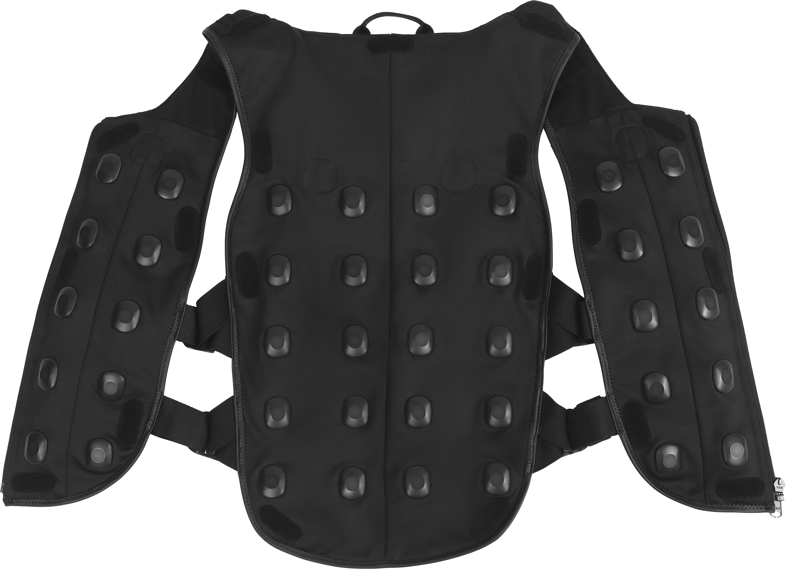

Asleep at the Virtual Wheel
The Increasing Inaccessibility of Virtual Reality Applications
This project looked at 330 of the most popular virtual reality (VR) applications to see how easy they are for people with disabilities to use. I found that developers are generally including fewer options to customise the VR experience. For example, important features like being able to play while sitting down, resizing text, or changing controller buttons are often missing or becoming less common over time. The goal of this research is to highlight these issues and provide clear recommendations so creators can build inclusive VR applications that everyone can use.
Project Overview
Review to provide a clearer state-of-the-art and historical understanding of how accessibility features are implemented within 330 VR applications.
- Presented at ACM Conference on Human Factors in Computing Systems (CHI '25) (opens in a new tab)
- Open-access full paper (PDF (opens in a new tab)) in CHI '25 Proceedings (opens in a new tab) (139 H5-index (1st ranked HCI publication on Google Scholar (opens in a new tab)); Core A* (opens in a new tab))
- Co-author (opens in a new tab) at The Third Workshop on Building an Inclusive and Accessible Metaverse for All (opens in a new tab) at CHI '25
- South-West UK Pre-CHI presenter (opens in a new tab)
- ACM Europe Summer School on Accessible and Inclusive Technologies: student volunteer (opens in a new tab) & poster presentation (opens in a new tab)

Problem Definition
VR technology is inherently ableist, with a lack of guidelines for designing experiences leading to limited developer awareness of best practices and a feeling of exclusion from people with disabilities. Due to a gap in literature exploring how accessibility options are presented in commercial applications, the current state of accessibility is hard to determine.
The following two key research questions were explored:
- Which accessibility features and software-level customisation options are available to tailor required interactions, physical positioning, locomotion, user interface (UI) elements, and outputs to individual needs?
- How has the accessibility of mainstream VR applications evolved since 2016?

The motivation for the review included:
- Continued academic engagement - understanding of decisions and acting as a reinforcement of the call to action in the creation of inclusive VR software
- Existing lack of guideline knowledge amongst practitioners
- Accessibility research focus mostly on sickness; less on non-visual feedback, leading to feeling of exclusion for users with sensory impairments
- Exploring the underexplored general VR accessibility field
Methodology
Data were collected from 330 applications released on all major VR application storefronts from 2016 to 2023, categorising accessibility features and options to tailor the experience available in each application.
A systematic software review process was followed, with inclusion criteria based upon commercial application usage metrics in order to identify the applications that are most likely to be experienced by users, in turn providing a representative overview of mainstream VR practices.
Read Video Description
A first-person view demonstrating a dashing locomotion mechanic in a virtual reality environment, showing a visual arc extending from the user's controller and indication of where the user will land on the ground.

Results
Our findings highlight a number of areas where practitioners have not widely implemented options to tailor application experiences, including little support for alternative adaptable hardware inputs, minimal text size adjustment options, and an almost complete lack of colourblind settings. Additionally, temporal trends unexpectedly emphasise how a number of essential accessibility features are becoming less prominently supported at a software-level, with these trends suggesting that further establishment of best practice guidelines and more stringent enforcement of accessibility recommendations by VR application platforms may be required to reverse the general growing inaccessibility of mainstream VR software.


Physical positioning flexibility is also decreasing, with primary seated posture progressively less offered. In addition to the reduction in input options, UI and output modality results indicate that users are largely unable to tailor the visual or audio experience to their own preferences or needs, with text size adjustment rarely included beyond depth-based control, display brightness settings contained in only 12 of the 330 applications, and dedicated colourblind control provided in just three applications. Potentially accessible haptic feedback, in particular for providing touch based information about the environment during locomotion, is also rarely included.
Interaction
Interaction findings include just under half of the applications allowing for dominant hand selection, whilst more fine-grained alterations over interactions, such as input key customisation with key binding alterations and adjustments to input sensitivity, with for example smoothing of aiming inputs, is generally less supported.


Physical Positioning
Although trends suggest primary seated posture is generally becoming less supported, seated access is generally well supported overall in 251 titles, with many applications either adapting to seated postures or providing options to choose between standing and seated access. Software-level lying down posture support however is available in just 4 titles, supporting the belief of bed-bound users that their access needs are not considered.
User Interface
Users are given little control over resizing of text or UI elements, with more detailed analysis revealing that depth-fixed size adjustments in particular are very rare.


Output Modality
Haptic feedback is found in a large number of titles, although further analysis reveals that haptics associated with locomotion may be underexplored in comparison to interactions, whilst volume and sound controls are also well supported in over 200 titles. Adjustments to colour and brightness however are very rare, vital considerations for users who are colourblind or have low vision for example.
Social & Communication
Subtitles and closed captions are included in 101 titles, whilst only 10 applications containing control over personal space, such as allowing for boundary bubbles, highlights how potential shared virtual environment harassment concerns are often not considered. Meanwhile, no title contains full signing support.

Conclusion
- Numerous failures to accommodate the needs of users with disabilities across all categories
- XR guidelines and platform-specific recommendations appear largely unsupported in mainstream titles
- Worrying accessibility trends, particularly in terms of interaction and physical positioning flexibility
CHI '25 video presentation
Read Video Transcript
Hello. My name is Craig Anderton, I’m a PhD candidate at Birmingham City University. I’m here today presenting on behalf of my co-authors Professor Chris Creed, Doctor Sayan Sarcar, and Doctor Arthur Theil. Our paper is titled Asleep at the Virtual Wheel: The Increasing Inaccessibility of Virtual Reality Applications.
I’d like to start today by briefly presenting the agenda for the presentation. I’ll begin by exploring the background for the project, I’ll then discuss the selection of applications we looked at, an overview of our results, and a discussion of feature support and overall trends. I’ll then end today by presenting the key takeaways and future directions suggested by our research.
An important motivation for our research was to provide a source of continued academic engagement with the mainstream VR industry. We wanted to build an understanding of the decisions made by practitioners, in turn acting as a further reinforcement of the call to action in the development of inclusive VR titles. There is a great emphasis placed on industry practitioners in the implementation of software-level accessible design choices. However, interviews indicate that a lack of guideline knowledge within the industry has led to practitioners being largely unaware of best practices.
Mitigation of sickness has to date received the largest amount of accessibility research focus, whilst the lack of standardisation for defining how to implement non-visual feedback has led to the feeling of exclusion for users with sensory impairments. Our research aims to enhance the practical relevance of future academic accessibility research, in particular in the underexplored general VR accessibility field.
To allow for trend analysis, the 330 titles most used by VR end users since the release of the first wave of sensor-based consumer-level HMDs in 2016 were selected from all major VR storefronts. Features were derived from the systematic analysis of emerging VR-specific guidelines and takeaways from accessibility focused VR research findings.
Whilst OS-level settings can allow for alteration of a selection of the accessibility features analysed in this review, for example mono audio balance control, OS-level, platform-specific, and utility software functionalities may not be available to all users accessing the same application on an alternative HMD device, OS, or software platform.
All applications were launched by the first author to systematically understand how accessibility features were presented in each title. The picture to the right highlights a selection of runtime accessibility features that were noted in the 'Arizona Sunshine' game. These include white subtitles, a visual focus indicator white circle that appears when an object is within range to be interacted with, and a visual representation of the bimanual right hand controller highlighting button locations.
The overview of our results further highlights a selection of the key accessibility features we explored in the 330 titles. Interaction findings include 148 applications allowing for dominant hand selection, whilst more fine-grained alterations over interactions, such as input customisation and adjustments to input sensitivity, with for example smoothing of aiming inputs, is generally less widely supported. Temporal interaction analysis further highlights how remapping appears largely unavailable in applications released each year, with no clear growth trends in allowing users to customise interaction demands and minimal support for extensive remapping.
For inputs, bimanual handheld controllers are supported in all but 3 freehand-only titles, whilst low-friction non-hardware-based input, such as freehand, eye, or speech-based input, is rarely available. Along with the minimal non-hardware supported input, input hardware trends highlight how the number of applications which contain potentially accessible switch-based gamepad and keyboard interaction support has dramatically decreased since 2016, with users increasingly given no other option than to engage solely with bimanual tracked controllers.
In terms of physical positioning, seated access is generally well supported overall in 251 titles, with many applications either adapting to seated postures or providing options to choose between standing and seated access. Software-level lying down posture support however is available in just 4 titles, supporting the belief of bed-bound users that their access needs are not considered. Although seated access is generally well supported, temporal trends further highlight a slight but concerning trend in the number of applications which provide primary seated posture support, with these physical positioning results taken together suggesting that physical flexibility may be decreasing.
User interface results meanwhile show how users are given little control over resizing of text or UI elements, with more detailed analysis revealing that size adjustments at a fixed depth in particular are very rare.
Next, for output modalities, results show how haptic feedback is found in a large number of titles, although further analysis reveals that haptics associated with locomotion may be underexplored in comparison to interactions. Binaural volume and sound controls are also well supported in over 200 titles, whilst adjustments to colour and brightness are very rarely available, both of which are potentially vital considerations for users who are colourblind or have low vision.
Finally, subtitles and closed captions are included in 101 titles, whilst only 10 applications contain control over personal space, such as allowing for boundary bubbles, highlighting how harassment concerns are often not considered. Sign language meanwhile is not included in the graph as no title contains full signing support. Temporal trends further highlight wider communication concerns in VR, with the low level of closed captions and subtitles each year supporting suggestions that users with additional social and communication requirements are largely unaccounted for.
Overall, our results show numerous failures to accommodate the needs of users with disabilities across all categories. Although VR accessibility in academia has been extensively researched, with findings appearing in guidelines such as those from the W3C, our results show that this research is largely not being translated into practice. XR guidelines and platform-specific recommendations overall appear largely unsupported in mainstream titles. Whilst a selection of our key headline findings highlight a number of worrying accessibility trends, particularly in terms of interaction and physical positioning flexibility.
Next, I want to go into a bit of depth highlighting the key takeaways from our review. Firstly, for practitioners, prioritise inclusive input support by ensuring that your titles support a variety of input types. Enhance physical positioning flexibility by incorporating seated and lying down postures. Provide UI and output customisation options to allow for customisation to sensory-specific requirements. Support communication needs such as providing sign language support. And finally, adhere to accessibility guidelines and implement platform-specific recommendations early in the design process.
For researchers, explore alternative inputs and how to incorporate assistive technologies within the spatial interface. Investigate the impact of limited output customisation, particularly with users who have sensory impairments. Assess broader accessibility trends in collaboration with industry practitioners. Focus on locomotion from diverse perspectives in order to further understand the potential trade-offs in locomotion techniques. And finally, evaluate the role of guidelines and further establish new or refined recommendations.
In terms of cross collaboration efforts between academia and industry, joint research projects should be further explored to bridge the gap between research and practice. Resource sharing is also vital, with open-source toolkits and open access guidelines allowing for more efficient feature implementation. Further establish workshops and working groups to foster a community-driven approach to the creation of VR experiences that brings together researchers, practitioners, and users with disabilities at all stages of research and development. And finally, promote accessibility education by collaborating across educational institutions and industry bodies to integrate accessibility teaching and training into curricula and professional development programs.
I want to end today by highlighting future directions our work suggests. For example, future accessibility audits are required to understand the effectiveness of individual implementations. Whilst further accessibility analyses must be conducted by engaging with a wide range of users with disabilities to understand the perspectives of diverse audiences. Additional categorisation features influenced by emerging VR guidelines may be beneficial to record in future analyses to further understand the evolving state of accessibility in VR. Whilst future research is required in underexplored areas such as multi-modal and customisable inputs, the presentation and control of spatial UI elements, and alternative output modalities beyond visuals.
Thank you very much for listening. Please send any questions or queries you have to the provided email addresses, and please read our paper in the proceedings for more in-depth findings and takeaways.
Key Takeaways
Practitioners
- Prioritise Inclusive Input Support
- Enhance Physical Positioning Flexibility
- Provide UI and Output Customisation Options
- Support Communication Needs
- Adhere to Accessibility Guidelines
Researchers
- Explore Alternative Inputs and Assistive Technologies
- Investigate the Impact of Limited Output Customisation
- Assess Accessibility Trends
- Focus on Locomotion From Diverse Perspectives
- Evaluate the Role of Guidelines
Collaboration
- Joint Research Projects
- Resource Sharing
- Further Establish Workshops and Working Groups
- Promote Accessibility Education
Future Directions
- Accessibility audits - effectiveness of implementations
- Engaging a wide range of users with disabilities in analyses
- Additional categorisation influenced by emerging VR guidelines
- Research required in multi-modal and customisable inputs, spatial UI elements, and alternative output modalities
.webp)
Reflections
The representative overview of industry practices for the first time highlights the continuing, and often concerning, evolution of mainstream VR software-level accessibility. Results showing a reduction in the offering of a number of accessible features highlights the urgency needed in a renewed focus on addressing the accessibility of mainstream VR.
We hope that sharing this data acts as a catalyst towards the further establishment of industry-wide VR accessibility guidelines, in turn leading to the creation of inclusive VR experiences for all audiences.
Together with the locomotion analysis, this was my first study during my PhD, laying the groundwork for future research both for my PhD & for the wider HCI research community.
This review lays the foundation for the rest of my PhD, building my skills at identifying and investigating research gaps, and hopefully will prove useful for both researchers looking to understand the state of accessibility in VR, teachers introducing the topic of accessibility in VR to students, and users who want more information about the accessibility levels of a specific VR application prior to purchase.
Overwhelmingly positive scores and comments from CHI '25 reviewers, followed by acceptance to present our results at the conference in Japan, have really boosted my confidence in my ability to conduct high-quality research contributing at the highest level.

Thank you for reading about my review!
Feel free to contact me for any further questions.
Read more of my case studies

Read Video Description
A video of swimming in virtual reality, highlighting how the user must swing their arms in a breast stroke manner to swim in the virtual water.
Read Video Description
A virtual classroom setting containing a flat-panel video of a woman performing sign language, positioned in the lower centre of the screen.